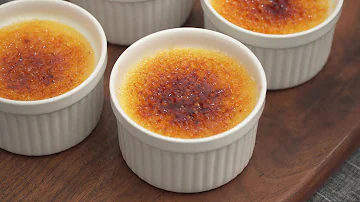

Crème Brûlée

Description
A delicious crème brûlée that will melt in your mouth with its heavenly sugary texture to boot. I found this recipe from a fairy well-known Vietnamese cooking channel, Nino's Home, known for its relaxing and peaceful atmosphere in his cooking videos as well as the chaotic subtitles and, of course, last but not least his incredible and delicious cooking recipes.
Ingredients
- Three Eggs
- 35g of Sugar
- 100ml of Milk
- 200g of Whipping Cream
- One Teaspoon of Vanilla Extract
- Hot Water
Steps
- Crack the three eggs. Separate the egg yolks. And mix them in a bowl with 35g of sugar.
- Mix 100ml of milk and 200g of whipping cream. And put them on a stove until it started boiling slightly.
- Pour the boiled mixture of milk and whipping cream bit by bit into the egg yolk bowl while also mixing them thoroughly after you pour each time. Pour them too quickly in one go and you'll accidentally “cook” the eggs.
- After that, add one teaspoon of vanilla extract into the mixture.
- Sieve the mixture first and then pour them separately into two or more creamic cups (or any cup or bowl that can withstand heat since we need to torch it later to make it really a creme brulee).
- Put the cups on a tray and fill the tray with hot water to heat up the cups.
- Put the tray into microwave and bake them for a good 30 to 40 minutes.
- After taking them out from the microwave oven, cool the cups off in a refrigerator for 2 to 3 hours
- Take them out from the refrigerator and sprinkle a thin layer of sugar on top of each cup.
- Then heat up and melt those layers of sugar slowly by aiming a blowtorch at them in each cup. Burn it on medium heat. Don't make the fire too big or the sugar won't burn evenly.
- After that, you have the delicious crème brûlée waiting to be melted in your mouth.